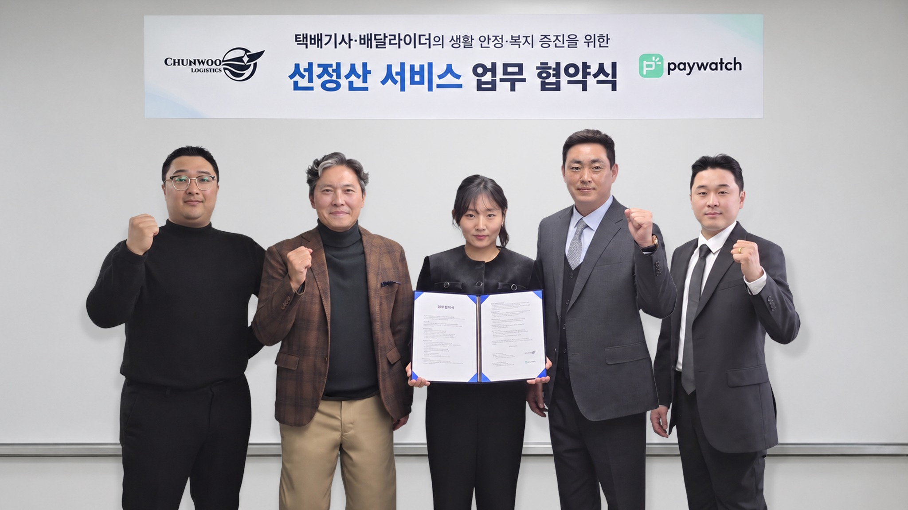

COUPANG EATS / RIDER DELIVERY배달은 든든하게,
배달은 든든하게,
수익은 더 빠르게.
천우로지스틱스의 라이더 배송 사업과 페이워치 연계 일급 선정산 서비스를 소개합니다.
RIDER BUSINESS
쿠팡이츠 라이더 사업
라이더의 배송 활동을 지원하고, 정산 편의성을 높이는 운영 환경을 지향합니다.
01
라이더 배송 운영
라이더 배송 운영
쿠팡이츠 배송 사업을 중심으로 라이더와 함께합니다.
02
일급 선정산
일급 선정산
선정산 전문기업 페이워치와 연계하여 배달 수익의 일부를 기존 정산일보다 빠르게 받을 수 있습니다.
03
명확한 지급 안내
명확한 지급 안내
이용 대상, 지급 가능 금액, 수수료 및 지급 시점은 실제 운영 조건에 따라 안내합니다.
OFFICIAL PARTNERSHIP
선정산 전문기업 페이워치와 함께하는
안전하고 편리한 일정산
천우로지스틱스는 페이워치와 선정산 서비스 업무협약을 체결했습니다. 라이더가 배달 수익의 일부를 기존 정산일보다 빠르게 받을 수 있도록 지원합니다.
빠른 수익 지급배달 실적 확인 후 운영 일정에 따라 지급
믿을 수 있는 제휴페이워치와 공식 업무협약 체결
간편한 이용페이워치 앱을 통한 가입 및 약정

PAYWATCH × CHEONWOO
페이워치와 함께하는 일급 선정산
배달 수익을 기존 정산일 전에 일부 지급받을 수 있도록 지원하는 방식입니다. 이용 전 실제 지급 조건과 수수료를 확인할 수 있도록 안내하겠습니다.
STEP 1
배송 활동
배송 활동
라이더가 배달 업무를 수행합니다.
STEP 2
실적 확인
실적 확인
정산 대상 배달 실적을 확인합니다.
STEP 3
선정산 이용
선정산 이용
이용 조건에 따라 수익 일부를 먼저 지급받습니다.
안내: 일급 선정산은 배달 수익 전액의 무조건적인 당일 지급을 의미하지 않습니다. 지급 비율·수수료·시점·이용 자격은 확정된 계약 및 운영 정책에 따라 별도 고지해야 합니다.
라이더 모집 및 상담
지원 방법과 문의 연락처는 회사 확인 후 연결할 예정입니다.
← 메인으로 돌아가기